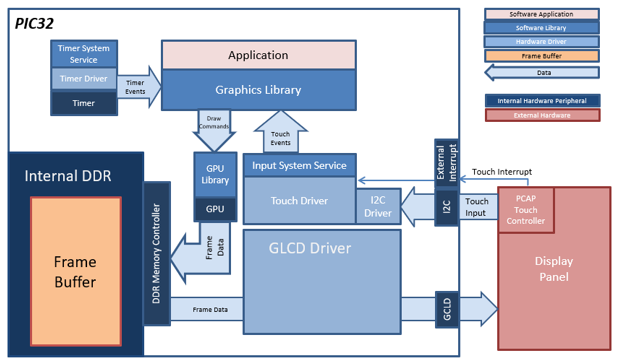
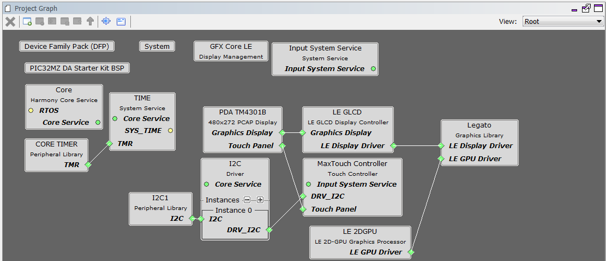
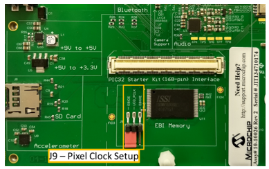
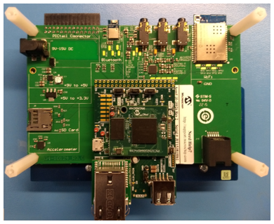

For this configurations, the application uses the Graphics Library to render graphics to the display. The Graphics library passes draw commands into the GPU Library, which in turn draws the widgets and images to the frame buffer stored in the DDR memory. Via the DDR2 Memory Controller, the GLCD display controller peripheral continuously transfers frame data from the frame buffers onto the LCD display.
The application also features user touch input through the integrated touch screen on the display panel. Touch input from the touch controller travels through the I2C port, and the Input System Service acquires the touch input information from the touch and I2C drivers. The Input System Service sends touch events to the Graphics library which processes these events and updates the frame data.
The block diagram(s) below show(s) the various software and hardware blocks used in this application:
Demonstration Features
• Legato Graphics Library
• GLCD display controller and NANO 2D GPU
• 32-bit RGBA Color Mode Frame Buffer in DDR memory
• Input system service and touch driver
• Time system service, timer-counter peripheral library and driver
• RLE compressed RGB image in internal flash

The Project Graph diagram below shows the Harmony components that are included in this application. Lines between components are drawn to satisfy components that depend on a capability that another component provides.
Adding the “PIC32MZ DA Starter Kit BSP” and “Legato Graphics w/ PDA TM4301B Display” Graphics Template component into the project graph will automatically add the components needed for a graphics project and resolve their dependencies. It will also configure the pins needed to drive the external peripherals like the display and the touch controller.
The parent directory for this application is gfx/apps/legato_quickstart. To build this application, use MPLAB X IDE to open the gfx/apps/legato_quickstart/firmware/legato_qs_mzda_intddr_sk_meb2_tm4301b.X project file.
The following table lists configuration properties:
|
Project Name |
BSP Used |
Graphics Template Used |
Description |
|
legato_qs_mzda_intddr_sk_meb2_tm4301b.X |
PIC32MZ DA Starter Kit |
Legato graphics w/ PDA TM4301b Display |
Legato graphics on PIC32MZ DA with Internal DDR Starter Kit, MEBII and PDA TM4301b Display |
 Important! Important! |
This application may contain custom code that is marked by the comments // START OF CUSTOM CODE ... and // END OF CUSTOM CODE. When using the MPLAB Harmony Configurator to regenerate the application code, use the "ALL" merging strategy and do not remove or replace the custom code. |
On the MEB II, the EBIOE and LCD_PCLK (J9) must be jumpered. A connection establishes the GLCD's pixel clock output timing. The external SRAM memory on the board is disabled. The J9 jumper is located on the bottom of the MEB II board, beneath where the starter kit is plugged into the board. Refer to the following figure for the exact location.

Connect the PIC32MZ DA Starter Kit to the MEB II board

Power up the board by connecting the power adapter to J3 power connector on the MEB II board or a powered USB cable to the USB DEBUG port on the Starter Kit board.

When Make changes. Generate. Run. is touched, the button will toggle with each individual touch.

|
MPLAB® Harmony Graphics Suite
|